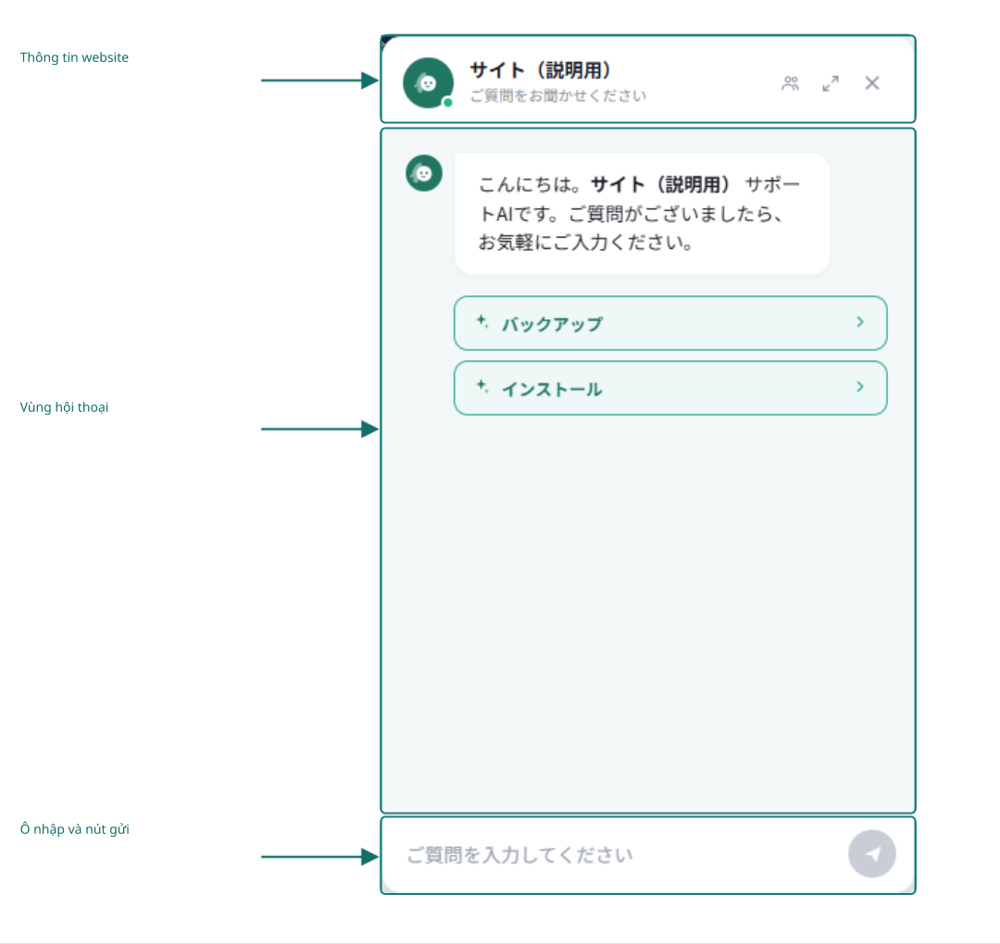
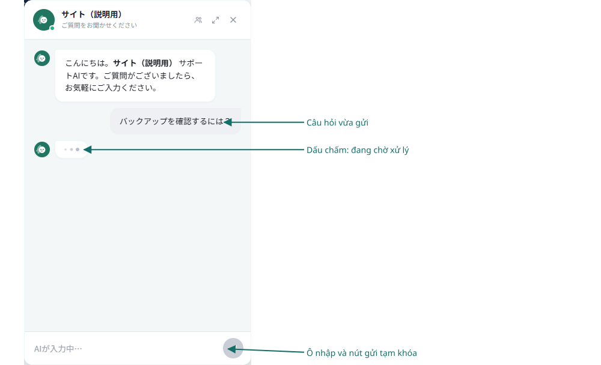
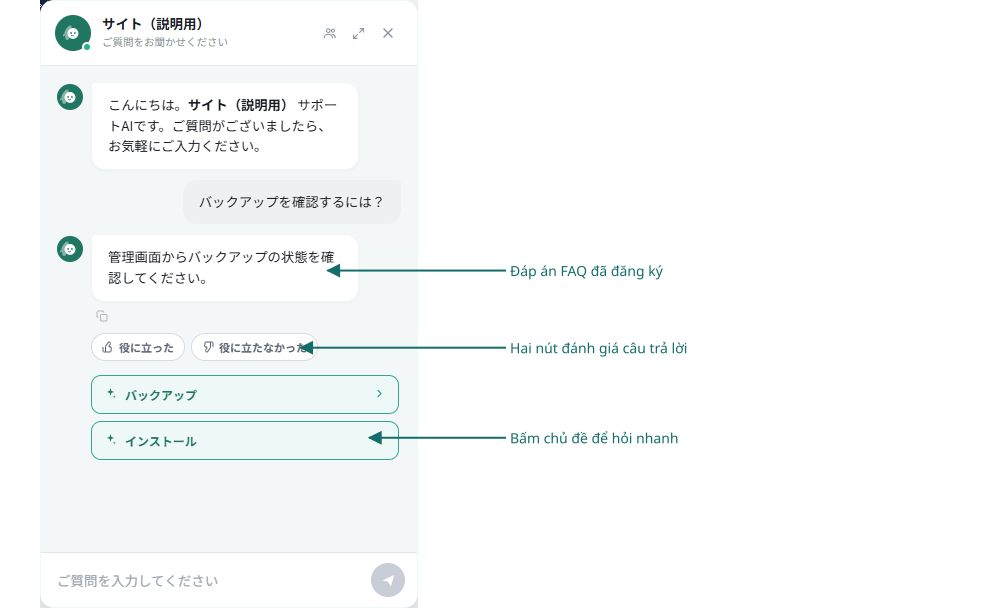
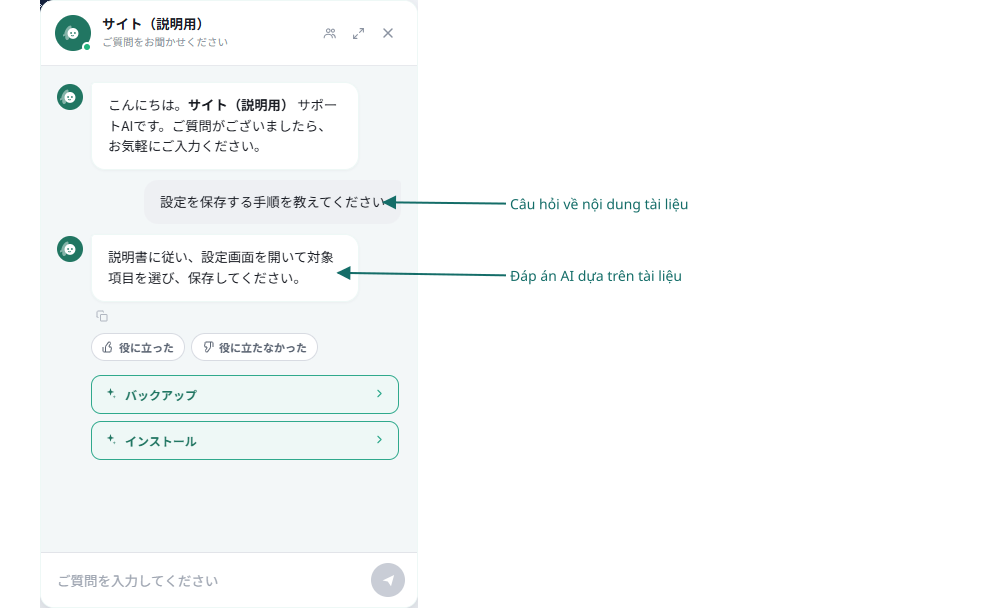
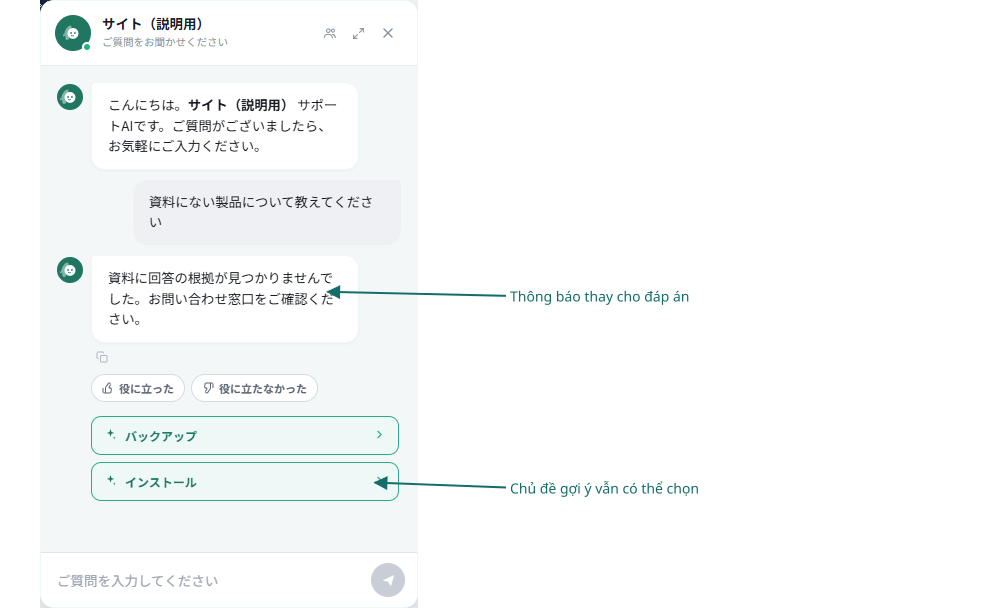
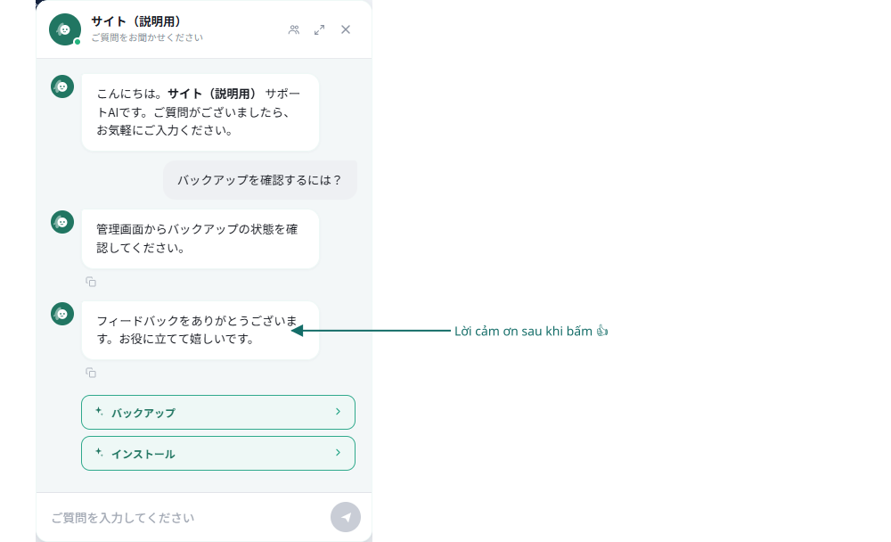
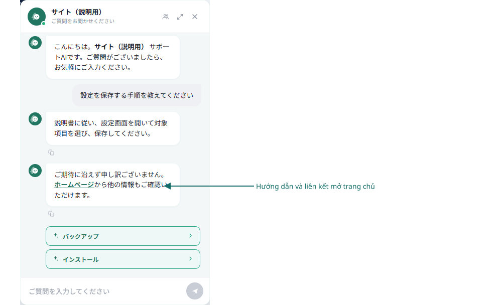

Mở và gửi câu hỏi
Mở ウィジェット確認 hoặc bấm biểu tượng chat trên website → hiện lời chào, câu hỏi gợi ý và ô nhập.

Nhập câu hỏi → Enter / nút gửi → hiện tin nhắn → AIが入力中… → chờ đáp án.

Trả lời từ FAQ
Tìm được FAQ phù hợp → hiện đáp án đã lưu và ảnh FAQ (nếu có) ngay dưới câu hỏi.

Khớp trực tiếp một FAQ → trả đáp án ngay. Nếu cần lựa chọn giữa các FAQ → AI chọn FAQ, không viết lại đáp án.
Trả lời từ tài liệu bằng AI
Chưa chọn được FAQ → tìm đoạn tài liệu đã duyệt → Ollama soạn đáp án → hiện trong cửa sổ chat.

Khi chưa đủ thông tin
Không đủ thông tin → yêu cầu nói rõ hơn hoặc hướng dẫn liên hệ → bấm liên kết để mở trang liên hệ.

Hỏi tiếp và đóng cửa sổ
Trong cùng cuộc trò chuyện, bạn có thể hỏi tiếp nhưng nên nêu rõ nội dung khi câu trước có nhiều ý. Bấm nút mở rộng để đọc thoải mái; bấm biểu tượng sao chép để lấy nội dung trả lời.
Bấm 閉じる kết thúc cuộc trò chuyện đang hiển thị. Mở lại hoặc tải lại trang sẽ bắt đầu cuộc trò chuyện mới; không nên dựa vào đó để tiếp tục một câu hỏi chưa nói rõ chủ đề.
Nút đánh giá câu trả lời
役に立った (👍) → ẩn hai nút của câu trả lời → hiện lời cảm ơn.

役に立たなかった (👎) → ẩn hai nút → hiện hướng dẫn → ホームページ → mở trang chủ.

Bấm nút đánh giá (👍/👎) → phần hiển thị của câu trả lời thay đổi.